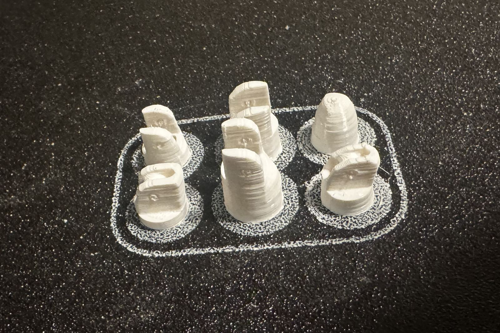
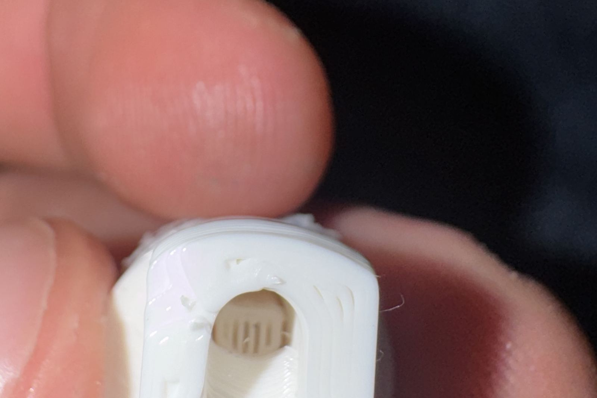
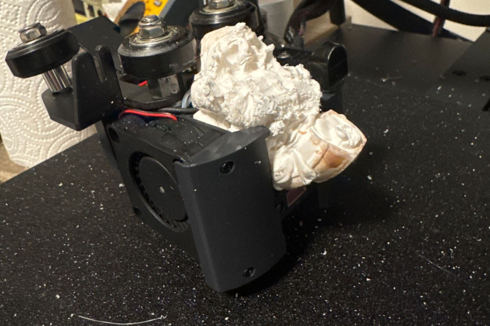
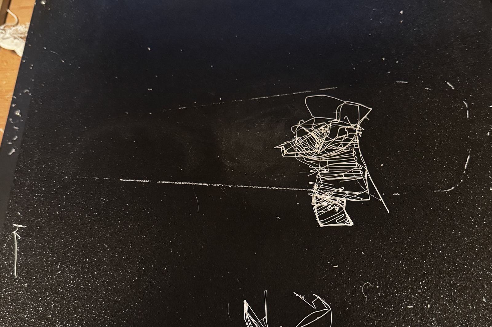
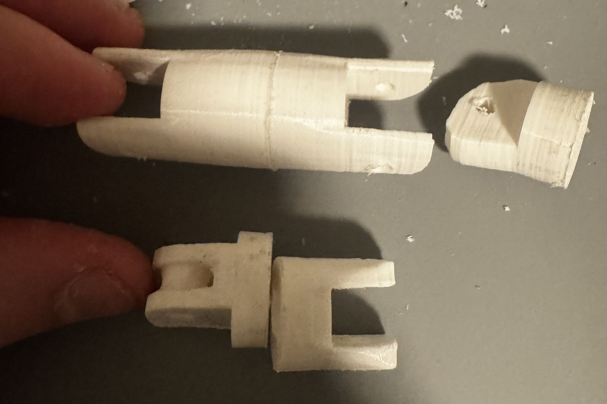

≈ 25 h≈ 25 t
of printing for the hand
printing for hånden
0
support inside the fingers
støtte inne i fingrene
4
pieces reprinted
deler printet på nytt
1
print head lost
printerhode tapt
Check the bed before trusting it
Sjekk platen før du stoler på den
The bed mesh was a month old, so before the first part I probed the bed again and compared. The shape hadn’t changed, but the whole bed sat about 0.055 mm higher, with the first layer only about 0.03 mm from scraping. I saved the new scan in place of the old one, and every part printed since has gone down cleanly.
Mesh-en av platen var en måned gammel, så før første del målte jeg platen på nytt og sammenlignet. Formen var den samme, men hele platen lå rundt 0,055 mm høyere, og første lag var bare rundt 0,03 mm fra å skrape. Jeg lagret den nye målingen i stedet for den gamle, og alle deler printet siden har lagt seg pent.

Support you can’t get out
Støtte som ikke kan fjernes
Each finger is six small pieces full of slots, tendon channels and pin holes. My usual settings put snug support in all of them, and no tool on my bench could dig it out again. Limiting support to the build plate didn’t help either: a tendon channel whose floor is the bed still counts as touching the plate.
Hver finger er seks små deler fulle av spor, senekanaler og hull til pinner. De vanlige innstillingene mine fylte alle med tettsittende støtte, og ingen verktøy på benken min fikk den ut igjen. Å begrense støtten til printeplaten hjalp heller ikke: en senekanal med platen som gulv teller fortsatt som at den berører platen.

So I measured instead of guessing. The widest gap any finger piece has to bridge is 3.9 mm, and 6.1 mm inside the dome of the fingertip — well within what PLA bridges on its own. I turned support off for the fingers and counted zero support moves in every file before printing. The reprinted pieces came out clean.
Så jeg målte i stedet for å gjette. Det bredeste spennet noen fingerdel må bygge bro over er 3,9 mm, og 6,1 mm inne i kuppelen på fingertuppen — godt innenfor det PLA klarer på egen hånd. Jeg skrudde av støtte for fingrene og telte null støttebevegelser i hver fil før printing. Delene som ble printet på nytt kom ut rene.
The finger covers were the exception. They’re curved shells that touch the bed on 10–18 mm² whichever way you turn them, so they kept their support — but it sits under an open hollow, and it came out in one piece.
Fingerdekslene var unntaket. De er buede skall som berører platen med 10–18 mm² uansett hvordan de snus, så de beholdt støtten — men den sitter under et åpent hulrom, og den kom ut i ett stykke.
A slip that didn’t matter, this time
En glipp som ikke betydde noe, denne gangen
Re-slicing the fingers, I loaded the decorative profile instead of the functional one, so the first ones printed at 8% infill instead of 20%. Before reprinting anything I checked how much it mattered: in a finger piece, infill is under 2% of the plastic even at 20%. The pieces are almost all wall. The rest of the hand was sliced at 20%, and nothing needed reprinting.
Da jeg slicet fingrene på nytt, lastet jeg dekorasjonsprofilen i stedet for den funksjonelle, så de første ble printet med 8 % fyll i stedet for 20 %. Før jeg printet noe på nytt sjekket jeg hvor mye det betydde: i en fingerdel er fyllet under 2 % av plasten selv med 20 %. Delene er nesten bare vegg. Resten av hånden ble slicet med 20 %, og ingenting måtte printes på nytt.
The night it ate the print head
Natten den spiste printerhodet
The fingers had all stuck well, so I got bolder: two tall forearm shells and the back of the hand on one 13-hour plate, running overnight and into the next day. A watcher script checks the printer while I’m away. It catches filament running out, a clog and a print left paused too long. What it can’t see is a part coming loose.
Fingrene hadde sittet godt, så jeg ble modigere: to høye underarmsskall og baksiden av hånden på én plate på 13 timer, som gikk gjennom natten og inn i neste dag. Et overvåkingsskript følger med på printeren mens jeg er borte. Det fanger opp tomt filament, tetting og en print som står for lenge på pause. Det det ikke ser, er en del som løsner.
Only thin outlines of the first layer were left on the bed, so the parts let go early. For hours after that, the printer kept laying plastic into the air, and it built up into a solid lump that encased the hot end. The watcher reported a normal print the whole time, because plastic was still coming out. It just wasn’t landing anywhere. A replacement print head is on its way.
Bare tynne omriss av første lag var igjen på platen, så delene slapp tidlig. I timevis etter det fortsatte printeren å legge plast ut i luften, og det bygde seg opp til en massiv klump som kapslet inn hotenden. Overvåkeren meldte om en normal print hele tiden, fordi det fortsatt kom plast ut. Den landet bare ikke noe sted. Et nytt printerhode er på vei.


What changes: no long unattended prints until a camera watches the bed with local spaghetti detection. Tall parts print alone, with a brim, while someone is home. The bed gets washed with soap before alcohol, because alcohol only spreads grease around. And the Z offset gets set again from scratch once the new head is on.
Det som endres: ingen lange printer uten tilsyn før et kamera følger med på platen med lokal deteksjon av spaghetti. Høye deler printes alene, med brim, mens noen er hjemme. Platen vaskes med såpe før alkohol, fordi alkohol bare smører fettet utover. Og Z-offseten settes på nytt fra bunnen av når det nye hodet er på.
Meanwhile, assembly
I mellomtiden, montering
The printer being down doesn’t stop the hand. The finger segments are glued, the hinge pins are 3 mm brass rod, and the guide had two corrections for me: the swinging lug holes want 3.2–3.5 mm while the fork ears stay at 3 mm, and each finger gets two braided tendons, one to close it and one to open it, knotted together under the fingertip cap.
At printeren står stille stopper ikke hånden. Fingersegmentene er limt, hengselpinnene er 3 mm messingstang, og byggeguiden hadde to korrigeringer til meg: hullene i leddene som svinger vil ha 3,2–3,5 mm mens ørene på gaflene blir på 3 mm, og hver finger får to flettede sener, én som lukker den og én som åpner den, knyttet sammen under hetten på fingertuppen.

A watcher is only as good as what it can measure. Mine measured the filament perfectly and was blind to the one failure that mattered. Know the blind spot of whatever is watching, and don’t let a long run sit in it.
En overvåker er bare så god som det den kan måle. Min målte filamentet perfekt og var blind for den ene feilen som betydde noe. Kjenn blindsonen til det som overvåker, og ikke la en lang print stå i den.